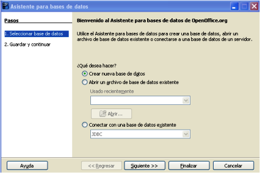
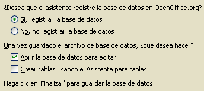

Tecnología de la Información y la Comunicación: Bases de datos
2.2. Creación de una base de datos
Importante
El Asistente para bases de datos permite crear una nueva base, editar una ya existente o conectarse a una base de datos de un servidor.
Comienza el trabajo. Vamos a crear una base de datos comenzando de cero, pero con ayuda. Cuando arranca OOo Base se inicia el Asistente para Bases de Datos.
El aspecto del Asistente es el siguiente:

Asistente para bases de datos de OOo
Comprueba lo aprendido
Solución
Pero no nos despistemos. Nuestra tarea es crear una nueva base de datos. Por tanto, selecciona esa opción y pasa al siguiente menú.
En la pantalla "Guardar y continuar" hay que marcar dos opciones:

- Registrar o no la base de datos.- esta opción permite indicar a OOo dónde y cómo se van a almacenar los datos. Debe usarse si nuestra base se va a conectar con otras aplicaciones puesto que esta opción permite a OOo localizarla.
- Comenzar a trabajar.- bien abriendo la base, bien usando el asistente de creación de tablas.
Caso práctico
En este tema vas a trabajar con una base de datos para la empresa Publi-Service del Señor Computer.
Vas a ir creando la base de datos paso a paso de forma guiada.
Ahora te toca a tí
Crea la base de datos Publi-Service y comprueba qué extensión tiene el fichero.
Curiosidad
¿Qué quiere decir que OOo Base puede conectar con la libreta de direcciones de Mozilla?
Investiga la respuesta a esta pregunta y la conexión con otras fuentes externas en este enlace: manejo_fuentes_externas_OOo_Base